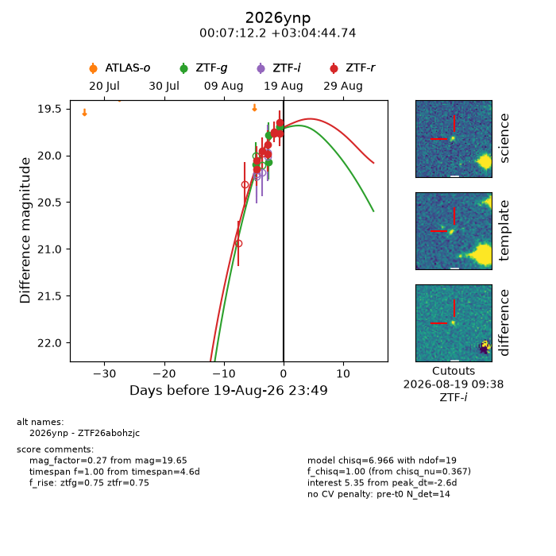
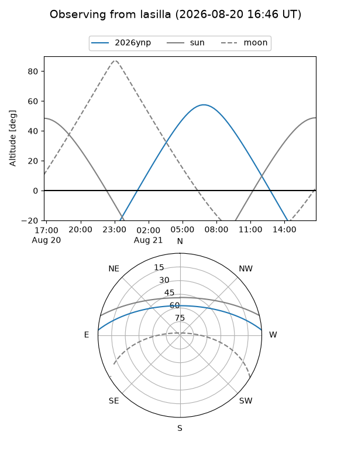
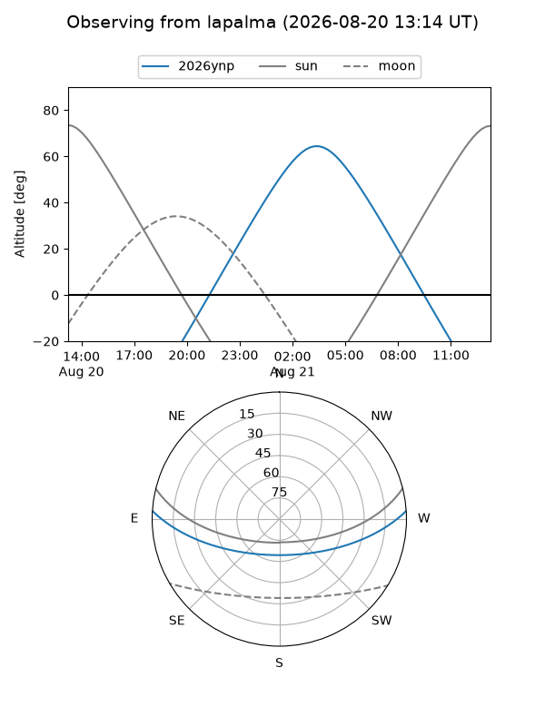
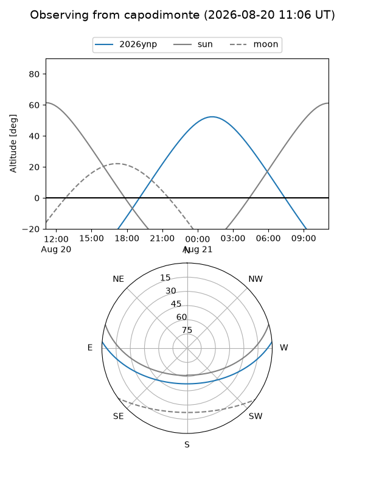
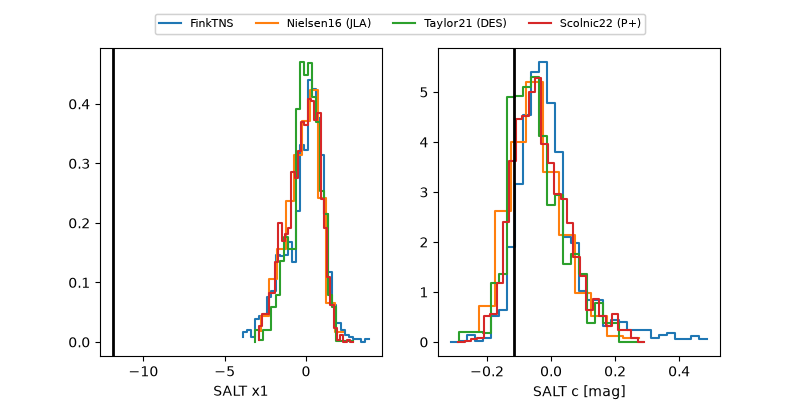

2026ynp
Target 2026ynp at 2026-08-20 11:50
Aliases and brokers:
FINK-ZTF: ztf.fink-portal.org/ZTF26abohzjc
Lasair-ZTF: lasair-ztf.lsst.ac.uk/objects/ZTF26abohzjc
ALeRCE-ZTF: alerce.online/object/ZTF26abohzjc
YSE-PZ: ziggy.ucolick.org/yse/transient_detail/2026ynp
TNS name: wis-tns.org/object/2026ynp
Direct TNS query: direct search
alt names
ZTF26abohzjc (ztf,fink_ztf)
2026ynp (tns,yse)
Coordinates:
equatorial (ra, dec) = 1.8006,+3.07909
equatorial (HMS+DMS) = 00:07:12.15,+03:04:44.74
galactic (l, b) = (101.7653,-57.96321)
Flags:
TNS type: nan
peak dt: -2.1
Photometry:
last ztfg=19.69, ztfr=19.65
5 ztfg, 9 ztfr detections
Lightcurve

Visibility



Additional plots
